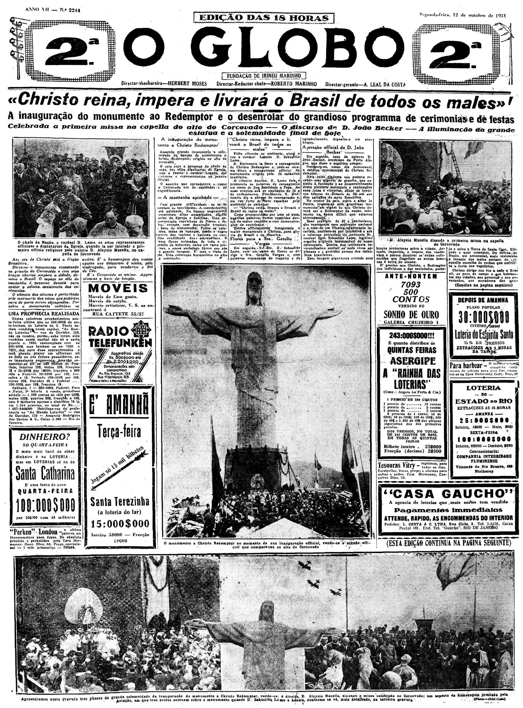
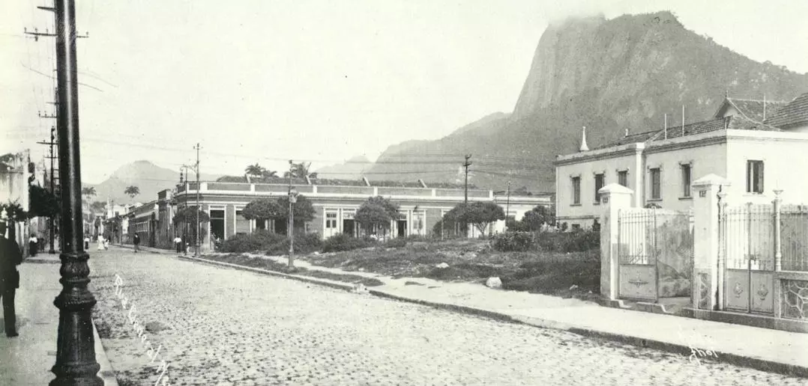
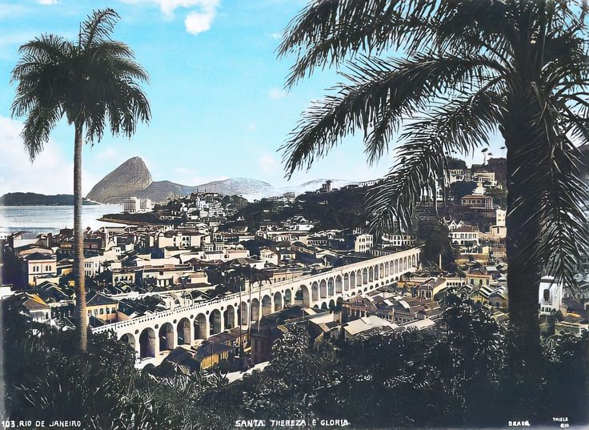

Fotos do Rio Antigo
Início
Fotos
Vídeos
Músicas
Avenida Beira Mar
Centro da Cidade Praça 15 Novembro
Copocabana e Ipanema

Cristo Redentor
Enseada de Botafogo, Rio de Janeiro

Glória
Centro

Santa Teresa
Rio de Janeiro

![Copocabana [sic], Ipanema](img/Copocabana [sic], Ipanema.jpg)